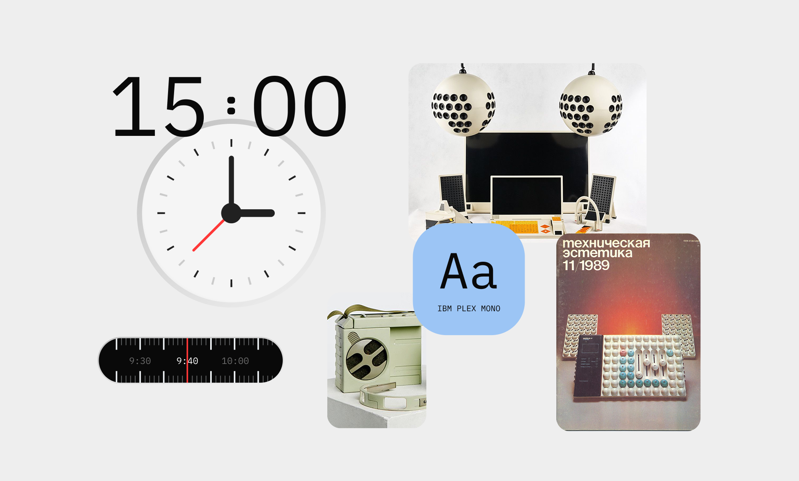
О проекте
Transsion Holdings — производитель смартфонов Tecno и Infinix. Компания инициировала разработку кастомного дизайна ОС HiOS для рынка РФ с акцентом на социально-культурные особенности пользователей.
Проект реализовывался в формате тендера среди крупнейших дизайн-студий — мы выиграли конкурс.
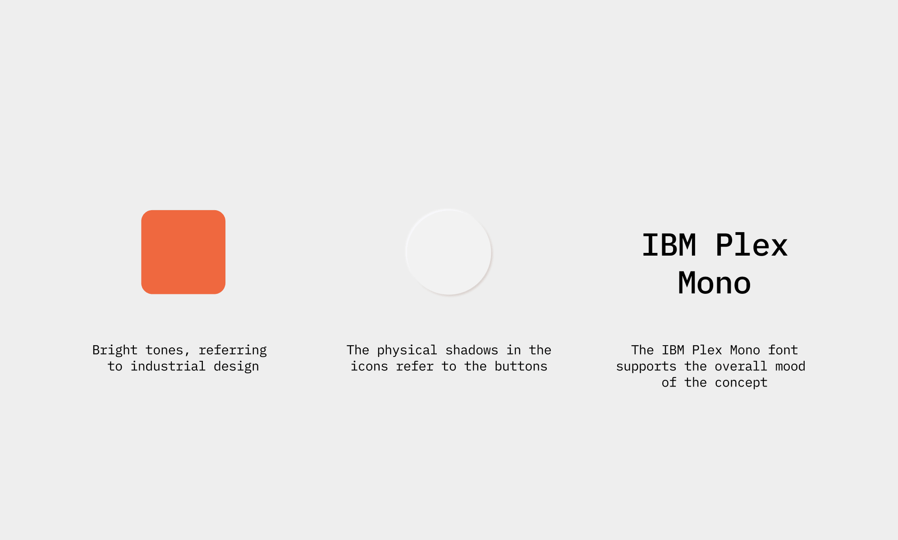
Проблемы
- Жесткая конкуренция среди китайских брендов (доля в РФ >70%);
- Невозможно выделиться на фоне остальных производителей;
- Компания системно строит рост через локальную адаптацию;
- Стандартный Android не учитывает локальные приложения;
- Борьба за пользователя увеличивается, рынок просел. Нужно повышать ценность устройств.
Цели проекта
- Разработать концепт операционной системы, которая по существу отражала бы социально-культурные особенности жителей России;
- Повысить узнаваемость бренда в РФ;
- Увеличить продажи смартфонов Techno и Infinix среди россиян;
Мои задачи
Я вызвался полностью взять на себя аналитическую часть, так как мне было интересно поизучать рынок и вывести конкретные поинты, которые помогут сделать дизайн. После исследования я участвовал в концепте.
Что я конкретно сделал:
- Провёл анализ мобильных ОС и собрал презентацию (90+ слайдов);
- Выявил ключевые дизайн-паттерны интерфейсов;
- Предложил и провел дополнительное исследование мобильных приложений;
- Разработал дизайн-концепт системы.
Инсайты исследований ОС, приложений и культур
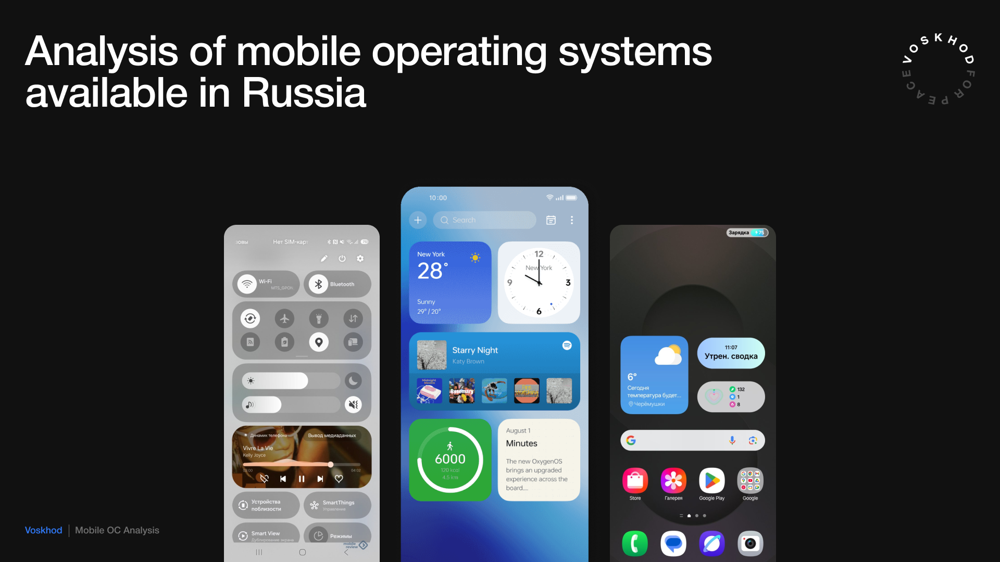
Для анализа мы выбрали 10 популярных в РФ операционных систем и оболочек: iOS, HyperOS, OneUI, OxygenOS, ColorOS, MagicOS, FunTouchOS, HarmonyOS, Pixel UI, Nothing OS. Ключевые выводы:
- Кастомизация — базовая функция;
- Пользователи могут настраивать иконки, виджеты и цветовую палитру интерфейса;
- Отказ от скевоморфизма;
- Доминируют минималистичные иконки, простые формы и нейтральные цвета;
- Возвращение «физичности»;
- Используются стеклянные эффекты, мягкие тени и глубина.
Я инициировал расширение исследования: дополнительно проанализировал мобильные приложения и различия между российским и китайским дизайном — это помогло глубже понять поведение пользователей.
Российские интерфейсы часто используют:
- Минималистичные элементы;
- Мягкие градиенты;
- Цифровой реализм;
- Аккуратные 3D-элементы.
Отличия:
- Китай — яркие цвета, высокая плотность интерфейса, активный 3D и декор;
- Россия — минимализм, спокойные цвета, плоские иконки, фокус на функции.
Этот анализ задал направление для будущей концепции.
Подробнее про исследования в полной версииКонцепция ver. 1
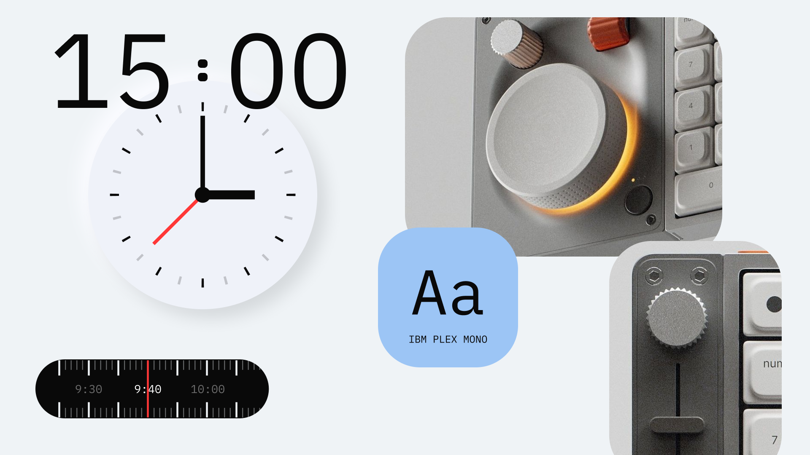
Я предложил концепцию «Индустриальная революция».
Она вдохновлена:
- Российской инженерной школой;
- Индустриальным дизайном;
- Эстетикой технологических систем.
Основная идея — создать интерфейс, который отражает:
- Точность;
- Функциональность;
- Инженерную эстетику.
Визуальные принципы концепта:
- Интерфейс должен быть простым и понятным;
- Формы и элементы вдохновлены промышленным дизайном;
- Каждый элемент интерфейса выполняет практическую задачу.
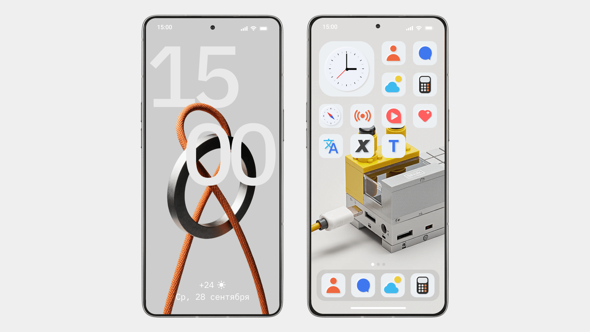
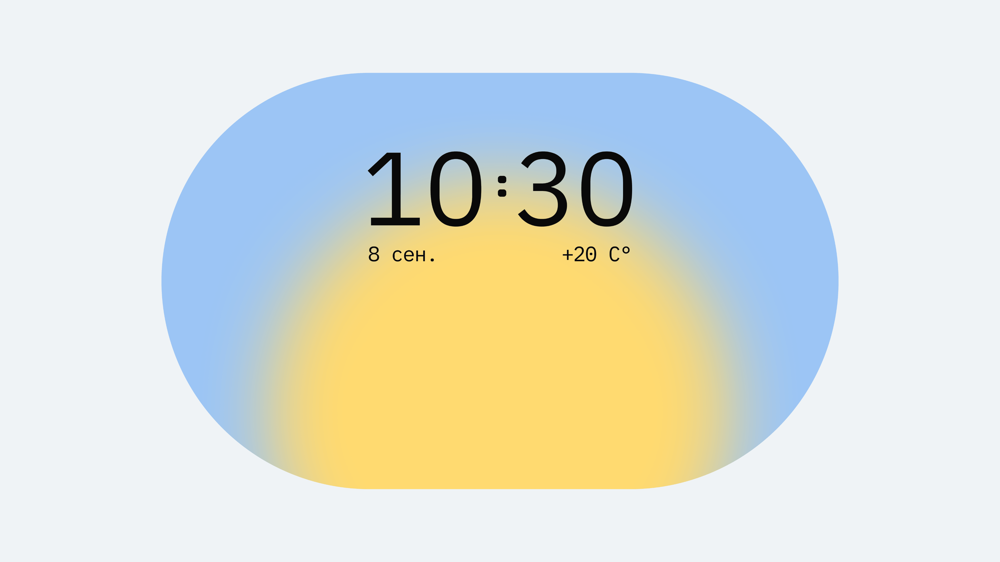

Концепция ver 2
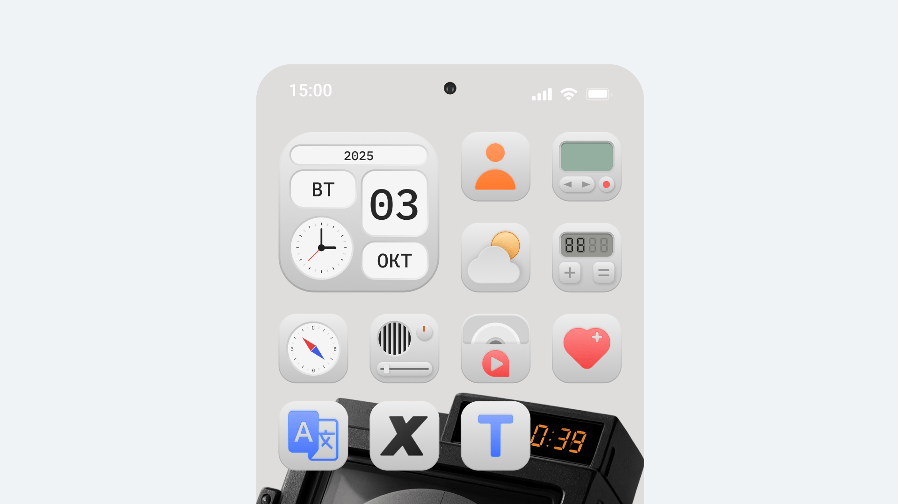
После первой презентации клиент выбрал 2 концепта из 5 — мой и концепт арт-директора. Для второй итерации нам нужно было усилить культурную составляющую.
Я переработал концепцию и представил обновлённую версию под названием «Техническая эстетика».
Концепт вдохновлён советским промышленным дизайном и журналом «Техническая эстетика».
Визуальный стиль сочетает:
- Индустриальные формы;
- Ностальгические мотивы;
- Современный минимализм.
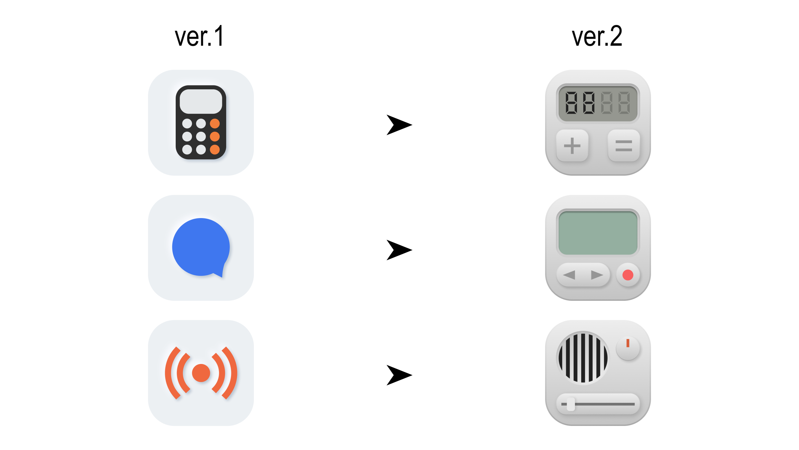
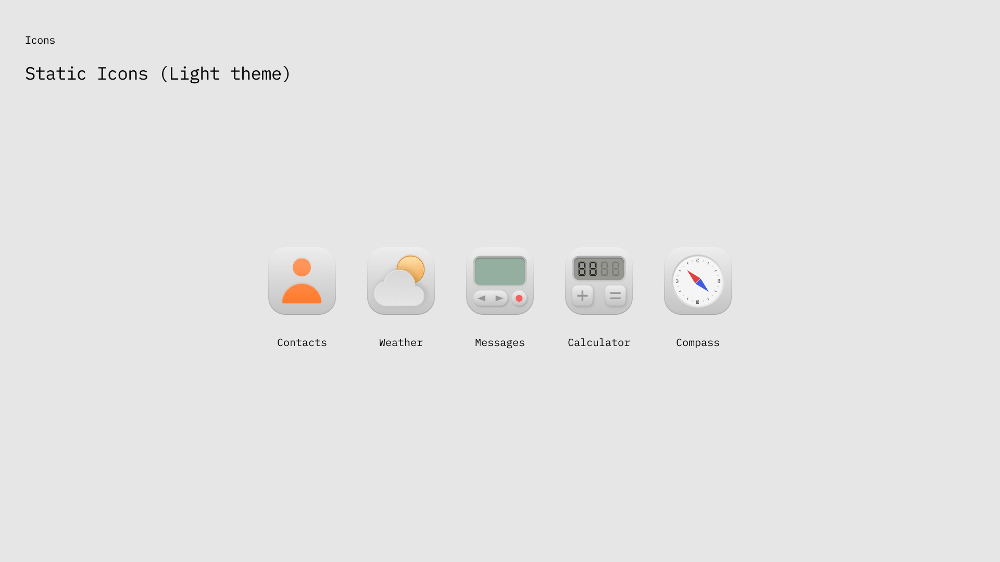
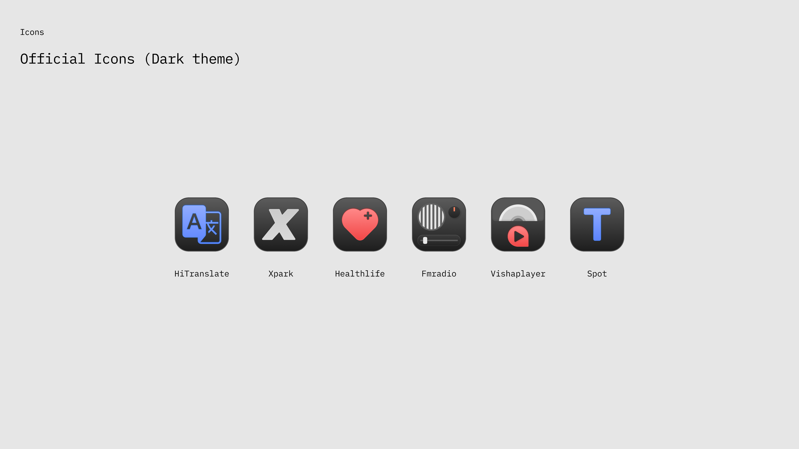

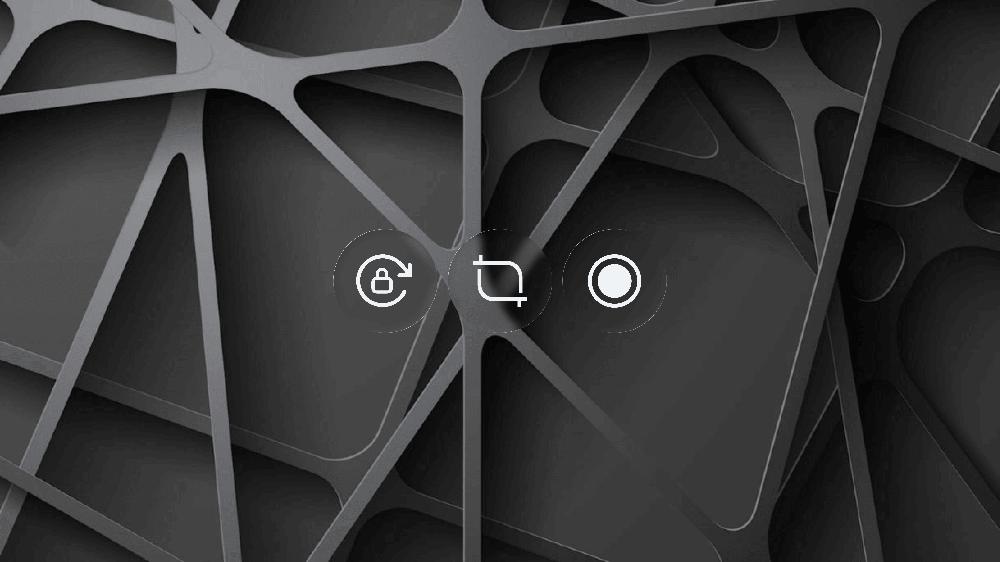
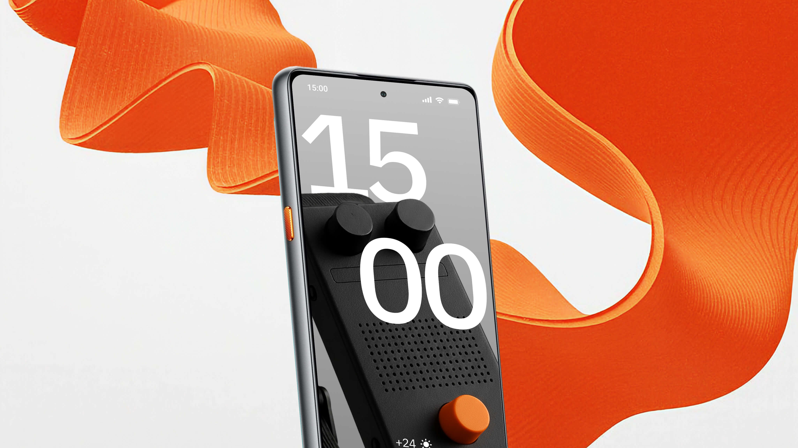
Результаты
Проект полностью сдан заказчику, но уже передан в продакшн. Мы ожидаем увеличение метрик:
- Увеличение доли активаций до 80%;
- Удержание (7 дней): до 70% пользователей;
- Повышение узнаваемости бренда среди жителей РФ;
- Доля компании на рынке РФ 14% → 28%.
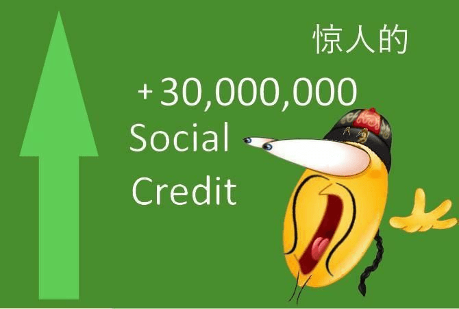
Рефлексия
Самой сложной частью проекта стало проектирование дизайна, основанного на культурном коде россиян. Поначалу было сложно «нащупать» тот самый подход, так как культура многогранна, и остановиться на чем-то одном было трудно.
После первой сдачи нам нужно было буквально за неделю адаптировать концепты под новые требования, что потребовало сильного брейншторминга и генерации идей.
У этого кейса есть более подробный вариант в BuildIn (формат Notion, работает без VPN). Если вы хотите подробнее почитать про процессы и исследования, то вам туда!
Следующий кейс